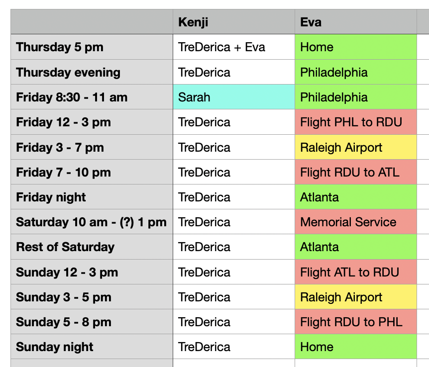

~8-10 am: Breakfast
Potty
Naps and occasional trips outside throughout the day
~5:30-7:30 pm: Dinner
Post-dinner play session
Chew treats or frozen licks
Nap
~9-10 pm: Pre-bedtime potty
Overnight: rare potty trips; he usually wakes me up if needed
You can refill any water bowls with tap water. Sometimes I take the bowls to a nearby sink and sometimes I fill a pitcher with water and bring it to the bowl.
Bowl locations: dining room, dog den (on tile), dog den (by door), and guest room.
If Kenji is having trouble settling down, and he's recently gone to the bathroom, you'll want to give him a treat that will last a while to keep him still while he calms down. I recommend gating him into the dining room area with his treat; he's likely to settle in his crate when he's done eating it.
Start with a pupsicle. These are the frozen things in the yellow molds in the freezer. I should have put one inside a rubber container before you arrived. You can refill it if he needs more than one.
But really if he finishes a pupsicle and doesn't rest soon after, you should probably give him a bully stick. Currently stored on the kitchen counter near the tennis balls in a muffin tin.
Another option is the no-hide chews. They are in the kitchen pantry (right hand wall). At most in a period of several hours, try to only give him 2 long-lasting treats.
Grab a handful (12-15) of treats (I put them in my pocket). Where Kenji can't see or reach (like on a countertop), put 3-4 treats in random muffin tins and cover all 12 slots with tennis balls. Have Kenji sit before placing the muffin tin tray on the ground. Then point and say "find it!".
Once he's found them all, take the tray up and put another 3-4 treats in. Repeat until you are out of treats.
Kenji usually sleeps in a bed on the floor next to my bed. When I am in the guest room, he is usually on the bed with me or occasionally on the chair in the corner. Since you are staying in the guest room, he is likely to sleep on the bed with you.
Please close the bedroom door at night; on the off chance he needs to go potty overnight, he will whine or paw at the door. Do not let him have access to the house overnight while you're asleep.
He hasn't needed an overnight potty trip more than once a month for a while, so I don't anticipate him doing anything other than sleeping through the night.
That being said, he may struggle to go to sleep at all. A little less than once a week, he gets active or distressed and can't settle for bedtime. Take him outside to confirm he doesn't need to pee/poop. Give him a frozen lick treat -- specifically a frozen lick treat because they are the most calming -- and see if that helps. Sometimes, I sit on the floor and pet him very slowly until he starts to look sleepy.
He is used to a pretty dark bedroom and me listening to a podcast while I fall asleep, but he doesn't have any requirements in terms of light or sound to help him sleep.
leashed walks are not required, but they will help keep him calmer throughout the weekend if you want to do them. his harness and leash are on the banister at the bottom of the stairs. the striped bag has poop bags. I typically do not use the bags or bins at the apartment complex because I don't pay rent there and don't want to get in trouble for using their amenities. you can leave used poop bags in the garage.
go in and out the front door for walks (Kenji will go to the front door to request a walk; it's okay to tell him no if it's not a good time). you don't need to lock the door behind you. we often go for walks after dark - a habit we got into to avoid the summer heat - but any time of day is fine.
Kenji wants to meet EVERYBODY, especially other dogs. If you go out on a leashed walk, try to steer away from other dogs before he sees them. If you can't avoid seeing them, your first strategy should be to crouch down, pet him, and speak softly until the dog is out of view. You can try to distract him with treats, but that hasn't worked much for me. If the other dog doesn't move out of sight soon, you'll need to try maneuvering around it or away. Be very careful to never pull the leash forward over Kenji's head -- beagles are notorious for slipping their little elbows out of harnesses and running away.
Things are changing every day, but for the most part, Kenji won't take himself outside to pee. (Update: October 13th - Kenji hasn't peed in the house in weeks and seems to be taking himself outside. He could easily regress with me being gone for so long, so don't assume this streak will continue!). At a minimum he should pee in the morning around breakfast, midday, in the evening around dinner, and before bedtime.
He is used to going for leashed walks out the front door (though not at any regular frequency or time of day). If you can't get him to go out to the fenced yard or you can and he's refusing to pee, you can use the harness and leash on the stair railing and take him out front. He will want to cross the street to the apartment complex, but you do not have to take him there. You can walk him in circles around the house or take the sidewalk into the neighborhood.
Kenji knows how to use the doggie door in the laundry room. He will take himself out that door when he needs to poop (but not pee). He will also let himself back in the house if he doesn't want to be outside, even if you think he's due for a pee.
Rain: Kenji is not a fan of getting his paws wet. He doesn't seem to mind a little precipitation when we're caught in the rain on a walk, but wet grass on his paws is yucky! Sometimes I walk him to the doggie door and also to the sliding glass door to see if he'll go out one if not the other. As a last resort, you can leash him up and go out the front door. If it's actively raining, he may pee on the stone wall perimter of the front porch. If it's not too bad, he may walk out to the path or the driveway to pee and then you can drag him back inside.
One final note on peeing: he really doesn't drink enough/much water and as he's settled in more and more, he's needed to pee less frequently. He used to pee like 10+ times a day, often in the house, but he seems to be settling into more like 3-4 times a day outside.
Kenji may request that you open the sliding door in the kitchen. During the daytime, he usually wants to sunbathe for a while. You can let him out and don't need to keep an eye on him at all times, but do keep an ear out for him returning via the doggie door or pawing at the sliding door to come back in.
During the day, he sometimes settles in weird places like the upstairs hallway. If he's sleeping and happy, let him be.
He is allowed to hang outside unsupervised so long as you listen for him barking and bring him in ASAP when he barks. Occasionally, he'll stop on his own, but usually he's barking because he's gotten very worked up over seeing a dog across the street and he is trying to get to it. Please always check ASAP if he starts barking/howling outside.
If he is barking too much, getting muddy, generally being a nuisance outside, you'll want to bring him inside and then cover the doggie door with the plastic cover. It is leaning against the wall on the counter to the left of the door in the laundry room.
If he starts barking inside the house, don't let him out; that will just get him more worked up. I've never figured out what he hears that causes him to start barking indoors, but it's probably a wild animal or neighborhood dog.
If you're opening the front door but NOT going for a walk, make sure Kenji is gated into the dining room area. For example, if you're expecting a food delivery, gate him before they arrive.
Kenji is allowed on:
The sheets and blanket have been freshly laundered.
If you need another blanket or a different blanket, try the linen closets in the hallway.
There is a pile of clean towels on the edge of the bathtub.
If you need any other towels, there are in the linen closests in the hallway.
Shower controls: Turn the middle knob turned to the left to make it a shower, to the right to make it a bath. The left-had knob is for hot water and the right-hand knob is for cold water.
The house does not have an alarm system. I will give you a key for the front door. I'm not even sure where keys to the other doors are, so I recommend leaving those open during the day and locking them from the inside when you go to bed at night.
You can get water from the fridge dispenser. Glasses are in the cabinet to the left of the sink. You can put your glass or water bottle down and press Magic Water for it to auto-fill. You can use Frozen Water to get ice and Cold Water for the same filtered water that Magic Water dispenses.
If you want to cook, but you're not familiar with how to use stainless steel pans, please search online for "how to cook XYZ in stainless steel". These pots and pans are new to me and I'm still learning how to use them properly.
You're welcome to any food or soda in the fridge/freezer. Not the beer, wine, or liquor please.
The bathroom is down the stairs from the front door. If anything is out of stock or out of order, let me know so I can fix it. I rarely use that bathroom, so assume I haven't noticed the issue!
During the summer, the A/C struggles to cool the dining room and kitchen section of the house, so I keep those west-facing windows covered with heavy curtains. Sorry it makes the place kind of dark and sad!
I typically close the curtains at night for privacy. You'll also want to close the curtains in the dog den and kitchen so that Kenji doesn't start barking at his reflection.
There are 3 separate heating zones: essentially one for each level of the house. Thermostats are in the dog den, dining room (behind the tv), and in the upstairs hallway (one is for heat and one is for the A/C. The penguin is on the A/C thermostat so don't use that one).
I'm not expecting any packages this weekend, but if something does arrive, please bring it inside. No need to check the mailbox.
Unless there's an emergency or I've given specific permission in a message on Rover, my bedroom, its attached bathroom, and my office are off limits. I will close those doors before I leave. I've never cut off Kenji's access to those rooms before, so message me on Rover if he is pawing at those doors and wants to go in.
You can use any of the TVs. I have YouTube Premium, but no other subscriptions. The Roku Channel tends to have minimal ads.
First aid, flashlight, and batteries are near the stand mixer / water kettle.
Please don't post photos taken in and around my house on the internet. You're welcome to send me a few photos of Kenji, but I don't need them.
During the service, on flights, and when I'm driving, I will not be able to answer questions via the Rover app. My estimated schedule for the weekend is below. The dog trainer I'm working with recommended that you contact her with any questions, especially when I am unavailable.
Sarah will be here from 8:30 am to 11:00 am on Friday. Otherwise, TreDerica will be home with Kenji.

Kathryn (Kat) Tedesco
Text or call Kat if you cannot reach me. She explicitly invited y'all to contact her with any questions over the weekend.
610-613-7227 | https://www.inustheytrust.com/
BluePearl (Conshohocken) | 15 minute drive
https://bluepearlvet.com/hospital/conshohocken-pa | 484-567-7999
If you know or prefer a 24-hour emergency vet that is closer, feel free to go there.
King of Prussia Vet | 30 minute drive
https://www.kofpvet.com | 610-265-4313
Open Monday - Friday & Saturday mornings
Liberty Vet Clinic | 3 minute drive
https://www.libvetclinic.com | 215-483-1066
Open Monday - Thursday & Friday mornings
If you're taking him in your vehicle for a medical emergency, use your best judgement with regard to securing him during transport.